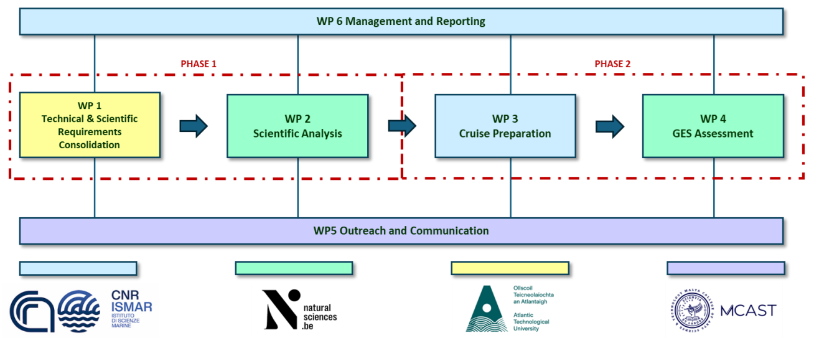

JPIO-PAGES
JPIO-PAGES - Process-based Assessment for the Good Environmental Status
September 2025 - August 2028
Summary
Understanding marine ecosystem impacts amid complex ocean dynamics is vital for monitoring ocean health but remains challenging. The EU’s Marine Strategy Framework Directive (MSFD) promotes a coordinated, precautionary approach to achieve Good Environmental Status (GES) using 11 ecosystem descriptors. Traditional linear and threshold-based assessments have proven insufficient. Recent efforts like the S4GES (2022) and BIOTREC-Tara (2024) cruises tested innovative, process-based, multi-platform monitoring strategies integrating physical, chemical, and biological data. These initiatives emphasize the role of ocean dynamics in biodiversity changes and support improved ecological assessments. PAGES will build on these foundations for more robust marine health evaluations.
PAGES will introduce an integrated, process-based approach to enhance MSFD monitoring strategies by diagnosing biodiversity within specific ocean dynamics. Providing proof-of-concepts, PAGES aims to influence national MSFD observation frameworks, shifting from conventional sampling to process-driven monitoring. PAGES will refine baselines and provide recommendations for future iterations and more effective applications of the proposed novel approach, including the implementation in future surveys for ground truthing and/or refinement of protocols. PAGES will demonstrate how understanding environmental dynamics can simplify complexity by revealing emergent ecosystem patterns and thus contributing to a more effective, data-driven approach for assessing marine environmental status. Just like a book, a summary of the marine status can be reached by reading all its PAGES!

Keywords: Good Environmental Status; Process-based monitoring; Adaptive sampling strategy; Integrated Physical Oceanography-Biodiversity; Ocean Health
ECOMOD members involved
ECOMOD tasks and responsabilities
Modelling eDNA transport Lagrangian transport modelling will be used to predict origin and dispersal of eDNA and hence provide a more realistic interpretation of eDNA data.
Partners
Funded partners:
National Research Council of Italy, Institute of Marine Science CNR-ISMAR, Italy (Coordinator)
Royal Belgian Institute of Natural Sciences RBINS-FWB, RBINS-ECOMOD and RBINS-ECOCHEM, Belgium
Atlantic Technological University, ATU, Ireland
Malta College of Arts, Science & Technology, MCAST, Malta
Associate partners:
Funding and contract
JPIO-PAGES will be funded by:
Belgium: Belgian Federal Science Policy Office BELSPO
Italy: National Institute of Oceanography and Applied Geophysics OGS
Ireland: Marine Institute MI
Malta: Malta Council for Science and Technology MCST
And In-kind contributions from associated partners.